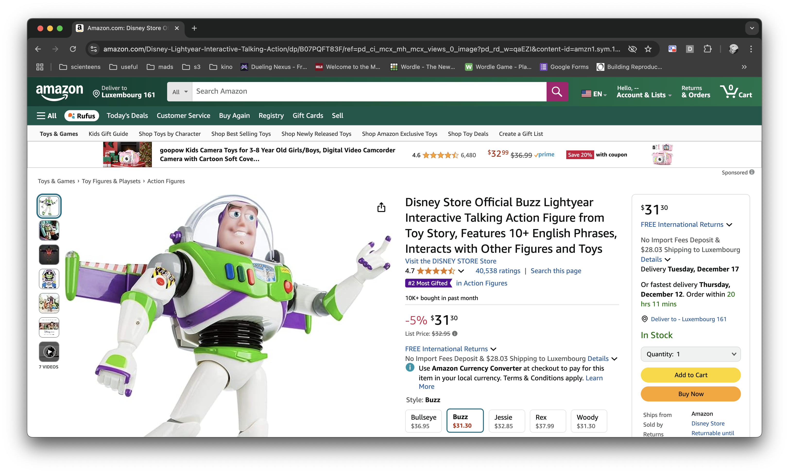
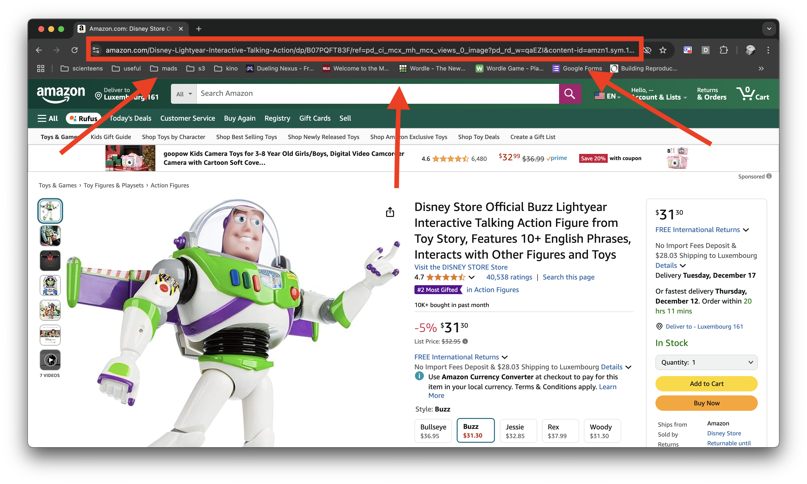
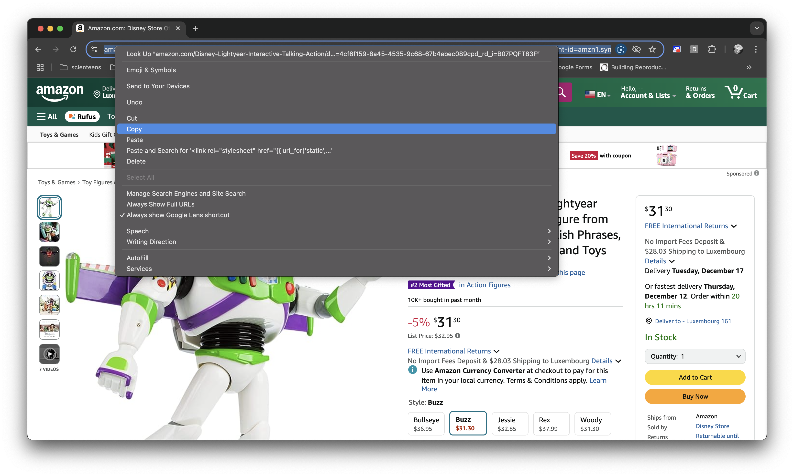
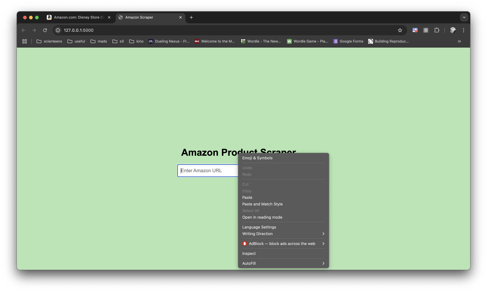
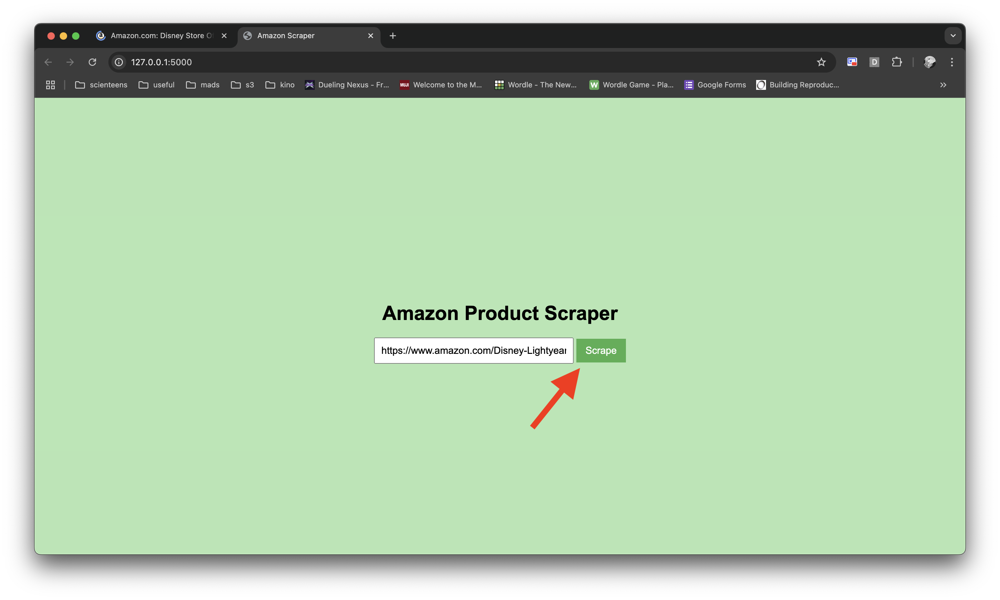
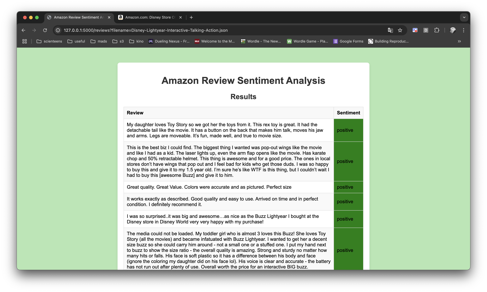

Step 1: Open the Amazon Website
Open your web browser (like Chrome or Safari) and go to the Amazon website: www.amazon.com.

Welcome! This tutorial will guide you step-by-step on how to get an Amazon product review analysis. Follow these simple steps:
Open your web browser (like Chrome or Safari) and go to the Amazon website: www.amazon.com.
Once you find your item, your page should look like this. This tutorial will use a Toy Story toy.
To get the review analysis, we need your Amazon product link
On the product page, look at the top of the screen. Click in the browser's address bar (where the web address appears). Right-click on the address and select Copy.
Paste the copied link into the empty text box. To paste, right-click where you want to place the link and select Paste.
You are all set. You just need to press the green button now.
You made it! You can now read all the analysis done to the reviews of your product.
